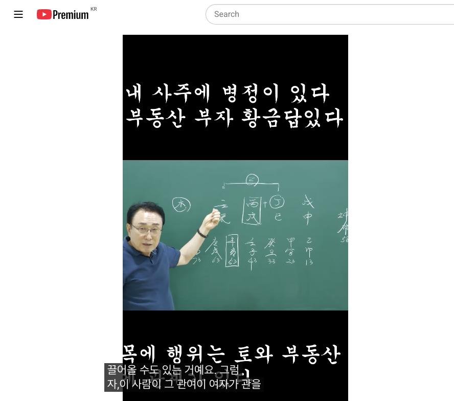

남촌물상TV 전체 문서 › Shorts S0110
병정 사주 토와 목의 관계는 부동산에 답이 있다 #automobile #작명 #관상 #동기부여 #사주명리학강의

| 문서 번호 | S0110 (Shorts (쇼츠)) |
|---|---|
| 영상 URL | https://www.youtube.com/watch?v=7XIjuR6gyaQ |
| 영상 ID | 7XIjuR6gyaQ |
| 게시일 | 2025-08-16 |
| 길이 | 0:58 (58초) |
| 조회수 | 3,213회 (수집 시점 기준) |
| 카테고리 | Education |
| 자막 | ko (자동생성) |
| 수집 시각 | 2026-08-30 17:03 (KST) |
영상 설명 (YouTube 설명 원문 그대로)
내사주 병정 부동산 부자 황금답이 있다
https://cafe.naver.com/saju5011 남촌물상역학연구회
https://cafe.daum.net/5011saju 남촌물상역학연구회
전체 자막 (28구간 · 타임스탬프 클릭 시 해당 장면으로 이동)
[0:00]이 사람은 병수지 뭐가 없어요? 목이
[0:02]없죠. 그러면 자이 사람 사주가 목이
[0:05]없다는 얘기는 목을 어디서
[0:08]끌어올까요? 자 정립 합에서 끌고
[0:09]와요. 우리가 이제 끌어온다는 개념을
[0:11]잘 이해를 해 보면 정립합을 이렇게
[0:13]딱 하면 여기서 이제 끌게 을목이죠.
[0:16]계수도 되죠. 그죠? 계수도 돼요.
[0:19]계수가 된다는 얘기는 무기압 기토해서
[0:21]끌어올 수도 있는 거예요. 그럼
[0:22]자,이 사람이 그 관여이 여자가 관을
[0:26]쓰려고 들면은 계수를 끌어다가 결과
[0:29]무토를 만들어서 기토로 만들 수
[0:31]있어서 할 수 있는 일은 목이죠. 그
[0:34]정립합도 목이에요. 근데 없는게
[0:36]목이기 때문에이 사람 반드시 목의
[0:37]행위를 하면 돈을 벌 수 있구나 금방
[0:39]알 수가 있어요. 그럼이 사람은
[0:41]지지의 술토와 신이 이렇게 깔려
[0:43]있잖아요. 그러면이 사주에 관계 뭐가
[0:45]있으면 좋아요. 유금만 하면 되지
[0:47]않아. 금국이 되는 거예요. 여기
[0:48]사람이 이제에 자기가 끌어온 재물은
[0:50]그 신금 아니에요. 돈을 벌려면
[0:53]네가이 돈을 먹으려면 뭐를 해야 돼?
[0:55]목 행위를 해야 돈을 먹어. 이렇게
[0:56]답이 정리를 내려 줘야 하는 거란
[0:58]말이에요.
칠판 원국 판독 (영상 프레임을 AI가 시각 판독 · 원판 대조 필수)
坤造
천간
庚
천간
丙
천간
戊
지지
辰
지지
戌
지지
申
판독 신뢰도: 낮음
판독 노트: 내 사주에 병정 있다 부동산, 庚辰?·丙戌·戊申 4주+대운 乙卯13~庚戌63, 坤命53 · 시점 0:26 · 해당 장면 보기↗
자막은 YouTube에서 제공하는 한국어 자동음성인식(ASR) 트랙의 원문입니다. 고유명사·한자 용어·숫자 표기에 자동인식 특유의 오류가 있을 수 있어, 원문을 가능한 한 그대로 보존했습니다. 위에 칠판 원국 판독 섹션이 있는 영상은 화면 프레임을 AI가 시각 판독한 것으로 신뢰도 표기를 확인하고, 없는 영상은 화면 도표가 문서에 포함되지 않습니다.